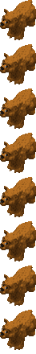
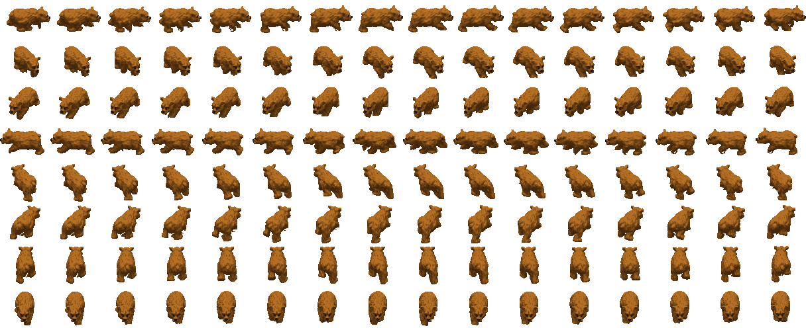

Tribe8 bears (Bears)Type / job ID48Animation job ID48Native namebaby_animalEnglishYoung AnimalSex / ageyoungNative allowedTrueParent chain (baseatomics)[48]Confidence{"sourceMapping": "SOURCE_COMPLETE", "framePixels": "PIXEL_CONFIRMED (per frame; see Catalogs/pixel_validation.csv)", "palette": "SOURCE_BODY_PALETTE", "shadow": "Coverage mask only; native destination darkening -> PRESENTATION_APPROXIMATION", "timing": "Native frame order and selection rules recorded; tick-to-seconds rate UNKNOWN"}Native references{"Game.exe": ["0x0048BD66 GraphicsAnimationRegistry_LoadFromCif", "0x0048CEA1 BobSeq global lookup", "0x00494AE6 frame selection", "0x004803D5 creation binding/palette", "0x00480576 job-change rebinding", "0x0048B258 random palette patches", "0x0049B930 shadow destination darkening"], "cpp": "MobileSpriteRegistry / MobileSpriteRuntimeOwner / ProductionWorldCompositor"}
Graphics bindings
| phase | section | inherited from | body variants (selector: body / shadow) | head variants | palettes | random palettes |
|---|---|---|---|---|---|---|
| initial | 4 | 0: CR_Ani_Body_00 / CR_Ani_Body_00_s atlas | bear01 |
Animations
Sheets: one row per native direction (0..7, only directions with frames), columns in native frame-list order, shared anchor. Colours use the declared base palette; runtime RNG palette ordinal, player colour and random patches are not applied (PRESENTATION_APPROXIMATION). Shadow masks are kind-2 coverage DATA.
atomic 2 animal_bear_baby_idle | BobSeq animal_bear_wait | section 233 | mode 0 | length 20
frame = min(count-1, floor(count*progress/duration)); duration from atomic length


direction frame lists (BOB ids)
[{"direction": 0, "bodyBobs": [88], "headBobs": [88], "status": null}, {"direction": 1, "bodyBobs": [88], "headBobs": [88], "status": null}, {"direction": 2, "bodyBobs": [88], "headBobs": [88], "status": null}, {"direction": 3, "bodyBobs": [88], "headBobs": [88], "status": null}, {"direction": 4, "bodyBobs": [88], "headBobs": [88], "status": null}, {"direction": 5, "bodyBobs": [88], "headBobs": [88], "status": null}, {"direction": 6, "bodyBobs": [88], "headBobs": [88], "status": null}, {"direction": 7, "bodyBobs": [88], "headBobs": [88], "status": null}]atomic 3 animal_bear_baby_idle | BobSeq animal_bear_wait | section 234 | mode 0 | length 20
frame = min(count-1, floor(count*progress/duration)); duration from atomic length



direction frame lists (BOB ids)
[{"direction": 0, "bodyBobs": [88], "headBobs": [88], "status": null}, {"direction": 1, "bodyBobs": [88], "headBobs": [88], "status": null}, {"direction": 2, "bodyBobs": [88], "headBobs": [88], "status": null}, {"direction": 3, "bodyBobs": [88], "headBobs": [88], "status": null}, {"direction": 4, "bodyBobs": [88], "headBobs": [88], "status": null}, {"direction": 5, "bodyBobs": [88], "headBobs": [88], "status": null}, {"direction": 6, "bodyBobs": [88], "headBobs": [88], "status": null}, {"direction": 7, "bodyBobs": [88], "headBobs": [88], "status": null}]atomic 4 animal_bear_baby_idle | BobSeq animal_bear_wait | section 235 | mode 0 | length 20
frame = min(count-1, floor(count*progress/duration)); duration from atomic length


direction frame lists (BOB ids)
[{"direction": 0, "bodyBobs": [88], "headBobs": [88], "status": null}, {"direction": 1, "bodyBobs": [88], "headBobs": [88], "status": null}, {"direction": 2, "bodyBobs": [88], "headBobs": [88], "status": null}, {"direction": 3, "bodyBobs": [88], "headBobs": [88], "status": null}, {"direction": 4, "bodyBobs": [88], "headBobs": [88], "status": null}, {"direction": 5, "bodyBobs": [88], "headBobs": [88], "status": null}, {"direction": 6, "bodyBobs": [88], "headBobs": [88], "status": null}, {"direction": 7, "bodyBobs": [88], "headBobs": [88], "status": null}]atomic 5 animal_bear_baby_idle | BobSeq animal_bear_wait | section 232 | mode 0 | length 20
frame = min(count-1, floor(count*progress/duration)); duration from atomic length


direction frame lists (BOB ids)
[{"direction": 0, "bodyBobs": [88], "headBobs": [88], "status": null}, {"direction": 1, "bodyBobs": [88], "headBobs": [88], "status": null}, {"direction": 2, "bodyBobs": [88], "headBobs": [88], "status": null}, {"direction": 3, "bodyBobs": [88], "headBobs": [88], "status": null}, {"direction": 4, "bodyBobs": [88], "headBobs": [88], "status": null}, {"direction": 5, "bodyBobs": [88], "headBobs": [88], "status": null}, {"direction": 6, "bodyBobs": [88], "headBobs": [88], "status": null}, {"direction": 7, "bodyBobs": [88], "headBobs": [88], "status": null}]atomic 6 animal_bear_baby_idle | BobSeq animal_bear_wait | section 231 | mode 0 | length 20
frame = min(count-1, floor(count*progress/duration)); duration from atomic length


direction frame lists (BOB ids)
[{"direction": 0, "bodyBobs": [88], "headBobs": [88], "status": null}, {"direction": 1, "bodyBobs": [88], "headBobs": [88], "status": null}, {"direction": 2, "bodyBobs": [88], "headBobs": [88], "status": null}, {"direction": 3, "bodyBobs": [88], "headBobs": [88], "status": null}, {"direction": 4, "bodyBobs": [88], "headBobs": [88], "status": null}, {"direction": 5, "bodyBobs": [88], "headBobs": [88], "status": null}, {"direction": 6, "bodyBobs": [88], "headBobs": [88], "status": null}, {"direction": 7, "bodyBobs": [88], "headBobs": [88], "status": null}]atomic 7 animal_bear_baby_idle | BobSeq animal_bear_wait | section 236 | mode 0 | length 20
frame = min(count-1, floor(count*progress/duration)); duration from atomic length


direction frame lists (BOB ids)
[{"direction": 0, "bodyBobs": [88], "headBobs": [88], "status": null}, {"direction": 1, "bodyBobs": [88], "headBobs": [88], "status": null}, {"direction": 2, "bodyBobs": [88], "headBobs": [88], "status": null}, {"direction": 3, "bodyBobs": [88], "headBobs": [88], "status": null}, {"direction": 4, "bodyBobs": [88], "headBobs": [88], "status": null}, {"direction": 5, "bodyBobs": [88], "headBobs": [88], "status": null}, {"direction": 6, "bodyBobs": [88], "headBobs": [88], "status": null}, {"direction": 7, "bodyBobs": [88], "headBobs": [88], "status": null}]atomic 9 animal_bear_eat | BobSeq animal_bear_wait | section 237 | mode 0 | length 20
frame = min(count-1, floor(count*progress/duration)); duration from atomic length


direction frame lists (BOB ids)
[{"direction": 0, "bodyBobs": [88], "headBobs": [88], "status": null}, {"direction": 1, "bodyBobs": [88], "headBobs": [88], "status": null}, {"direction": 2, "bodyBobs": [88], "headBobs": [88], "status": null}, {"direction": 3, "bodyBobs": [88], "headBobs": [88], "status": null}, {"direction": 4, "bodyBobs": [88], "headBobs": [88], "status": null}, {"direction": 5, "bodyBobs": [88], "headBobs": [88], "status": null}, {"direction": 6, "bodyBobs": [88], "headBobs": [88], "status": null}, {"direction": 7, "bodyBobs": [88], "headBobs": [88], "status": null}]walk 0 walk | BobSeq animal_bear_walk | section 1105 | mode 0 | length None
frame = frameTick % count (walk; caller frame tick)



direction frame lists (BOB ids)
[{"direction": 0, "bodyBobs": [179, 180, 181, 182, 183, 184, 185, 186, 187, 188, 189, 190, 191, 192, 193, 194], "headBobs": [179, 180, 181, 182, 183, 184, 185, 186, 187, 188, 189, 190, 191, 192, 193, 194], "status": null}, {"direction": 1, "bodyBobs": [195, 196, 197, 198, 199, 200, 201, 202, 203, 204, 205, 206, 207, 208, 209, 210], "headBobs": [195, 196, 197, 198, 199, 200, 201, 202, 203, 204, 205, 206, 207, 208, 209, 210], "status": null}, {"direction": 2, "bodyBobs": [115, 116, 117, 118, 119, 120, 121, 122, 123, 124, 125, 126, 127, 128, 129, 130], "headBobs": [115, 116, 117, 118, 119, 120, 121, 122, 123, 124, 125, 126, 127, 128, 129, 130], "status": null}, {"direction": 3, "bodyBobs": [131, 132, 133, 134, 135, 136, 137, 138, 139, 140, 141, 142, 143, 144, 145, 146], "headBobs": [131, 132, 133, 134, 135, 136, 137, 138, 139, 140, 141, 142, 143, 144, 145, 146], "status": null}, {"direction": 4, "bodyBobs": [147, 148, 149, 150, 151, 152, 153, 154, 155, 156, 157, 158, 159, 160, 161, 162], "headBobs": [147, 148, 149, 150, 151, 152, 153, 154, 155, 156, 157, 158, 159, 160, 161, 162], "status": null}, {"direction": 5, "bodyBobs": [163, 164, 165, 166, 167, 168, 169, 170, 171, 172, 173, 174, 175, 176, 177, 178], "headBobs": [163, 164, 165, 166, 167, 168, 169, 170, 171, 172, 173, 174, 175, 176, 177, 178], "status": null}, {"direction": 6, "bodyBobs": [227, 228, 229, 230, 231, 232, 233, 234, 235, 236, 237, 238, 239, 240, 241, 242], "headBobs": [227, 228, 229, 230, 231, 232, 233, 234, 235, 236, 237, 238, 239, 240, 241, 242], "status": null}, {"direction": 7, "bodyBobs": [211, 212, 213, 214, 215, 216, 217, 218, 219, 220, 221, 222, 223, 224, 225, 226], "headBobs": [211, 212, 213, 214, 215, 216, 217, 218, 219, 220, 221, 222, 223, 224, 225, 226], "status": null}]Atomics declared without a graphics record
81:animal_bear_attack
0x00494AE6: lookup fails along the parent chain, then retries selector 0 at the chain root.